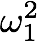
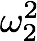
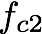
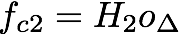

| LTPDA Toolbox™ | contents | |
LTP along the principal measurement axis (x) is represented schematically by the diagram reported in figure below.

The available signal is the displacement at the output of the optical metrology system (OMS). In order to extract the acceleration noise from the displacement signal we have to process the data accordingly to the scheme reported in figure below.
In case the commanded forces are available, the scheme for the conversion to acceleration is reported in the diagram.
Since displacement data contains interferometer sensing noise, the reconstructed acceleration is the combination of the proper acceleration noise and a contribution from the sensing noise (shaped by the inverse of the dynamics). For such reason the reconstructed signal is indicated with the term equivalent acceleration.
LPF can be considered as a three body controlled system composed of the two TMs and the spacecraft (SC). Its equations of motion along the measurement axis can be written as:
In order to avoid confusion, TM1 is the free-fall reference and TM2 is the actuated TM.
Moving to the Laplace domain, substituting for the spacecraft dynamics and substituting for the differential coordinate, the equation of motion can be rewritten as:
Introducing matrix notation.
The equation of motion can be rewritten:

The output displacement o corresponds to the measurement of x provided by the sensing system:

The dynamics can be now rewritten in terms of the known output o:
The quantity on the right-hand side represents the target force-per-unit-mass acting on the test masses combined with the sensing noise. This is the only quantity that can be estimated from the displacement output by means of the left-hand side of the equation above. The tool described in the following section performs the calculation reported in the left-hand side of the equation.
Notation table.
| Symbol | Description |
|---|---|
|
|
TMs coordinates along the sensitive axis. They are relative coordinates in the spacecraft reference frame. |
|
|
Absolute spacecraft coordinate along the sensitive axis. |
|
|
Masses of the two TMs and of the spacecraft. |
|  and  | Stiffnesses coupling the TMs and the spacecraft. |
|
|
Forces acting on TMs and the spacecraft respectively. |
|  and | Control forces on the second TM and the spacecraft respectively. |
|
|
Output displacement signals as provided by the interferometer readout system. |
|
|
Transfer functions of the control systems on TM2 and the spacecraft. The force applied by the controllers is calculated on the basis of the output displacement, therefore  and . |
| |
Topic 3 - Estimation of equivalent acceleration. | Tools for estimating the equivalent acceleration in LTPDA | |
©LTP Team